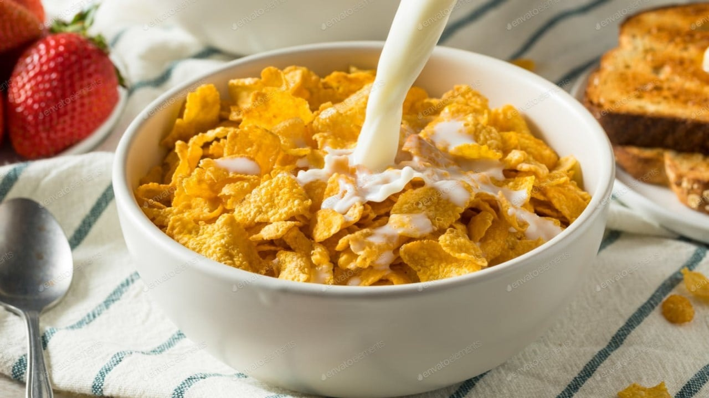

Leche con Cereal

Aprenderás a preparar el clásico desayuno de leche con cereal, perfecto para comenzar tu día
Ingredientes
- leche
- cereal
- milo en polvo (a gusto, sólo para complementar)
Preparación
- agregar milo (si así gustas) y el cereal en un bowl
- vertir la leche despacio (para no desparramar y que no te reten después)
- revolver y disfrutar
Inicio